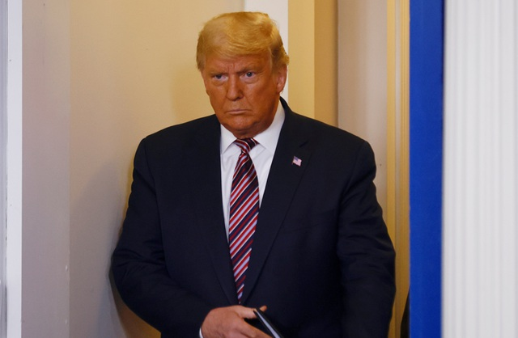

Dân trí Tổng thống Donald Trump cảnh báo Mỹ sẽ không thể có vắc xin Covid-19 nếu ông Joe Biden làm chủ nhân Nhà Trắng.
Tổng thống Donald Trump (Ảnh: Reuters)
"Nếu Joe Biden làm tổng thống, sẽ không có vắc xin trong 4 năm tới và FDA (Cục Quản lý Thực phẩm và Dược phẩm Mỹ) cũng không bao giờ phê duyệt vắc xin đó nhanh chóng. Sự quan liêu sẽ hủy hoại hàng triệu sinh mạng", Tổng thống Donald Trump viết trên Twitter ngày 9/11.
Trong một bình luận trên Twitter, ông Trump cáo buộc “FDA và đảng Dân chủ không muốn ông giành được chiến thắng về vắc xin trước ngày bầu cử”.
"Như tôi đã nói từ lâu, Pfizer và các hãng khác sẽ chỉ công bố vắc xin sau bầu cử, bởi họ không đủ can đảm để làm điều đó trước bầu cử. Tương tự như vậy, FDA lẽ ra phải phê duyệt vắc xin sớm hơn, không phải vì mục đích chính trị, mà là để cứu các sinh mạng”, ông Trump cho biết.
Tuyên bố của Tổng thống Trump được đưa ra trong bối cảnh dịch Covid-19 vẫn đang bùng phát mạnh mẽ tại Mỹ. Mỹ gần đây liên tục ghi nhận hơn 100.000 ca bệnh mới mỗi ngày. Tính đến nay, dịch Covid-19 đã khiến hơn 10 triệu người mắc bệnh và hơn 243.000 người chết tại Mỹ.
Vắc xin Covid-19 được cho là một trong những vấn đề có tác động đáng kể đến chiến dịch tranh cử tổng thống Mỹ năm nay.
Ứng viên tổng thống đảng Dân chủ Joe Biden và ứng viên phó tổng thống cho biết, họ không tin tuyên bố của ông Trump rằng nước Mỹ sẽ có vắc xin Covid-19 trước bầu cử. Ông Biden cũng chỉ trích cách ứng phó đại dịch của chính quyền Tổng thống Trump, hối thúc người Mỹ nghe theo lời khuyên của các nhà khoa học.
Ông Biden ngày 9/11 có cuộc họp đầu tiên với ủy ban cố vấn chuyển giao quyền lực về Covid-19. Ủy ban này được nhanh chóng thành lập để bàn biện pháp ứng phó với dịch Covid-19 tại Mỹ. Đây cũng là cam kết của ông Biden khi còn tranh cử tổng thống.
Ủy ban trên gồm 12 thành viên, trong đó có các nhà dịch tễ học, chuyên gia y tế và giáo sư nổi tiếng. Động thái này diễn ra vài ngày sau khi các hãng truyền thông công bố số liệu tính toán cho thấy ông Biden đã giành trên 270 phiếu đại cử tri để đắc cử tổng thống Mỹ.